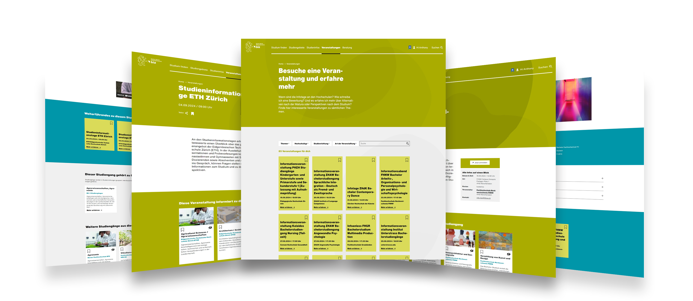
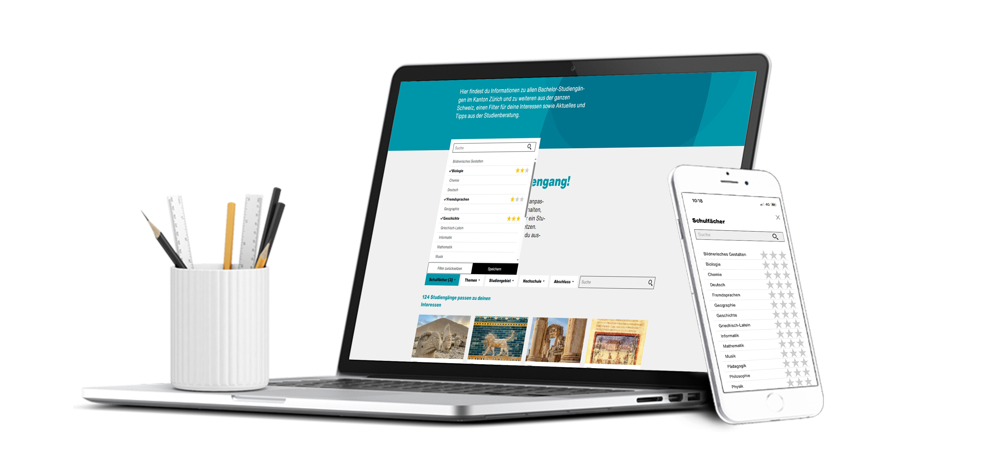

The Product
Studienwahl (study choice portal) is an online platform that helps prospective students explore and choose the
right study program in Zurich or the neighboring cantons.
The Goal
Improve the user experience of Studienwahl to enhance end-user satisfaction through better usability,
structured event management, and refined filtering.
My Role
As the Project Manager, I was responsible for overseeing the entire project, from planning and coordination
to execution.
The Setup
This project took place at the Information Agency of the Office for Youth and Vocational Guidance in Zurich and
lasted one month. I worked at 60% capacity, with the project being carried out alongside my regular daily
tasks.
The project was structured in three phases:
For this project, the Information Agency requested a detailed documentation of the website’s API. This was necessary to understand how the import process between databases functions. The resulting documentation provides a solid guide for similar future projects, enabling more efficient implementation without having to start from scratch. Due to the confidential nature of some governmental data, I will not elaborate on the first phase and will proceed directly to the second.
A known problem at the agency was that the events page on Studienwahl was overflowing with listings, making it hard for students to find what they were searching for. Institutions like ETH and UZH, which only host information events twice a year, were buried under a flood of listings from schools like Kalaidos or ZHAW that hold sessions almost every week. This was a problem because, statistically, most users are primarily interested in the larger institutions.
I started by mapping out a structured process to bring order to the chaos. This involved several key steps:
To keep everything consistent, I drafted a UX writing template that set the tone and ensured each event would give students the same kind of quick, useful snapshot.
Once the process was in place, I trained the team so they could maintain this clarity moving forward. I also thought carefully about how these events should appear on the site. Instead of long lists, I opted for a card-based UI, making it easier to scan and compare options.
The impact was immediate: the events page became much more manageable, and students could find the key information they were looking for without feeling overwhelmed.
To identify additional friction points, I organized usability tests with representative users. They navigated the platform while thinking aloud. This revealed critical insights:
Due to time restrictions, I decided to address the filtering system on the homepage, since it was the most pressing issue. The other two points were documented for future improvements.
I first needed to understand the root cause. I discovered that all study programs were tagged with the highest relevance level (3) for multiple subjects and interests, even if they were not the most relevant.
To address this problem, I collaborated with study advisors to review and adjust relevance levels for hundreds of programs. Finally, I built a detailed matrix to drive this reclassification, and once approved, I implemented it in the backend. This reduced irrelevant search hits, making the portal significantly more intuitive.
Through this process, I learned how critical it is to balance reducing information overload while preserving essential data. Students can now filter more precisely, navigating Studienwahl with less frustration and greater confidence.
This project highlighted the power of small, data-informed UX adjustments to drive substantial improvements in user satisfaction.